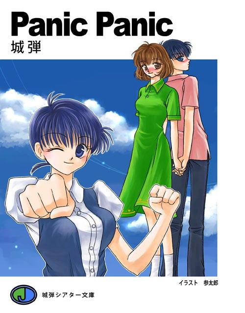

『ＰａｎｉｃＰａｎｉｃ』
ＣＯＮＴＥＮＴＳ
ゲームシステムはこちらへ
インストカードを見る（登場人物＆技表）
制作秘話へ
パロディ原典集へ

「ＰａｎｉｃＰａｎｉｃ専用掲示板」
『ＰａｎｉｃＰａｎｉｃ』の感想をどうぞおねがいします。
この作品は架空の格闘ゲームのノベライズです。
僕が大好きな作品。『らんま１／２』（高橋留美子先生。小学館）を愛するあまり独自の視点で書いてみたものです。
そこにやはり大好きな『ジョジョの奇妙な冒険』（荒木飛呂彦先生・集英社）と
『ストリートファイターシリーズ』（株式会社カプコン）のエッセンスをくわえた、早い話『なんでもあり』と言う構成になっています。
ご立腹の方もいらっしゃるでしょうがあまり目くじらを立てずお茶でも飲みながら笑い飛ばしていただければ幸いです。
ＰａｎｉｃＰａｎｉｃ検定
あなたのパニパニへの愛を試します（笑）
お気軽にどうぞ
コマーシャライザーで作成しました。
第１話『アイドルは新入生』
その学校。無限塾はやる気と個性を重視して入学を認めていた。金がある無しは関係ない。不良も優等生も関係ない。
集った変な奴ら。世間知らずのお姫さま。その護衛の現代の忍者。重症のオタッキー。外面優等生で中身はオヤジ。
普段は温厚だが切れると手のつけられない少女。
そして飛びっきりの美少女でグラマー。頭もよければスポーツ万能だが絶望的なドジ娘。赤星みずき。デビュー。
Ｐａｒｔ１ Ｐａｒｔ２ Ｐａｒｔ３ Ｐａｒｔ４ Ｐａｒｔ５ Ｐａｒｔ６
第２話『今がそのときだ』
無限塾１年２組に入ったはずの村上真理は一度も学校に出ていなかった。
すさんだ生活を繰り返す彼女はとある喧嘩から四季隊の一人。夏木山三と戦うことになる。だがそこに榊原が介入してきた。
Ｐａｒｔ１ Ｐａｒｔ２ Ｐａｒｔ３ Ｐａｒｔ４
第３話『飢えた虎』
四季隊三番手。秋本は剣の達人。木刀で人を殺せる男。
ふとしたときに顔をあわせた十郎太に興味を示した秋本は執拗に勝負を挑んでくる。忍びの体術対邪剣。凄絶なる死闘の予感。
Ｐａｒｔ１ Ｐａｒｔ２ Ｐａｒｔ３ Ｐａｒｔ４
第４話『縁』
上条明を慕う少女。若葉綾那。上条明に恨みを抱く四季隊・冬野五郎。３人の遺恨は一月前までさかのぼる。
そして３者が再び顔をあわせたとき、戦いの中で上条に異変が起きた。
Ｐａｒｔ１ Ｐａｒｔ２ Ｐａｒｔ３ Ｐａｒｔ４
第５話『お店においでよ』
ゆかりの実家のファミリーレストランでアクシデントが重なりウェイトレスがいなくなってしまった。このままではしばらく休業を余儀なくされる。
ゆかりは真理に助けを求め結果みずき・七瀬・姫子・綾那が短期アルバイトで助ける事になった。果たしてまともに勤まるのか。
Ｐａｒｔ１ Ｐａｒｔ２ Ｐａｒｔ３ Ｐａｒｔ４
第６話『乾杯』
十六年前。五月二十六日。赤星瑞樹誕生。同年八月一日。及川七瀬誕生。隣同士の家に生まれた男の子と女の子。
それが共に女子高生となるまでに何があったのか。瑞樹の誕生日に集まった友人たちの前で父親・秀樹の口から語られるここまでの歴史。
Ｐａｒｔ１ Ｐａｒｔ２ Ｐａｒｔ３ Ｐａｒｔ４
第７話『狂気の正体』
炎に包まれてもだえ苦しむ女生徒は無限塾の制服を纏っていた。
それが榊原和彦に彼のマリオネット『ビッグ・ショット』が見せた不吉な未来を予知する悪夢。その予知夢が現実に近づきつつある中、恐るべき狂気が鳴動する。
Ｐａｒｔ１ Ｐａｒｔ２ Ｐａｒｔ３ Ｐａｒｔ４
第８話『クラブ活動パニック』
ゆかりの死で荒れる真理。その神経を逆なでするがごとく『正義クラブ』が真理を不良と極めつけ挑戦してきた。
一方、聞きこみ調査で無限塾を訪れた上条繁刑事を見た中尾（斑）は…
Ｐａｒｔ１ Ｐａｒｔ２ Ｐａｒｔ３ Ｐａｒｔ４
第９話『激突』
ついに悪漢高校総番が無限塾へ乗りこんできた。その圧倒的なパワーは四季隊と比べ物にならない。それを迎え撃つ男。彼と総番の遺恨とは？
そして総番はどうして無限塾を狙うのか？
Ｐａｒｔ１ Ｐａｒｔ２ Ｐａｒｔ３ Ｐａｒｔ４
第１０話『恋するみずき』
人は心で恋をするのか。それとも体でするのか。赤星みずき。少年の心を持つ少女。それがついに男に恋心を抱いたか。
２年の先輩に猛アタック。心中穏やかでない七瀬は…
Ｐａｒｔ１ Ｐａｒｔ２ Ｐａｒｔ３ Ｐａｒｔ４
第１１話『サマーパニック』
女の敵。痴漢。本来なら被害に遭うはずのない被害に遭うみずきは憤慨する。痴漢退治に燃える。
だが反面、逃げに逃げていた水泳の授業をいよいよしなくてはならなくなった。
女のプロポーションをみんなに見せることになったがそれどころではない珍騒動がプールで巻き起こる。
Ｐａｒｔ１ Ｐａｒｔ２ Ｐａｒｔ３ Ｐａｒｔ４
第１２話『死闘』
期末試験終了。夏休み前の試験休みに突入。勉強漬けだった一同は遊びに出る。
一方これまたストレス発散の為に白昼堂々殺しをするために斑は変装して町を行く。
そして運命の遭遇。男の瑞樹と変装した斑。互いに教室で毎日顔をあわせる存在とは知らずに死闘を繰り広げる。
Ｐａｒｔ１ Ｐａｒｔ２ Ｐａｒｔ３ Ｐａｒｔ４
第１３話『素晴らしきベースボール』
ピッチャー赤星瑞樹。キャッチャー赤星秀樹。ファースト村上真理。セカンド北條姫子。サード上条明。ショート若葉綾那。レフト榊原和彦。センター風間十郎太。ライト及川七瀬。これでまともな野球になるのかぁ。対戦相手のチームも曲者揃い。
前代未聞の珍プレーの続出
Ｐａｒｔ１ Ｐａｒｔ２ Ｐａｒｔ３
第１４話『センチメンタルジャーニー』
夏休み。旅のシーズン。海水浴と温泉を希望してみずきたちは九州へと旅立つ。
志し半ばにして天に旅立ってしまったゆかりを思い感傷的にもなるがしかし黙っていてもトラブルを呼ぶ面々は旅先でも例外ではなかった。
センチメンタルな旅などまっていようはずもない。珍談。奇談の続出旅行。
Ｐａｒｔ１ Ｐａｒｔ２ Ｐａｒｔ３ Ｐａｒｔ４ Ｐａｒｔ５
第１５話『即売会パニック』
やってきました。日本の夏が。日本最大の同人誌即売会『ブックトレードフェスティバル』…トレスが。夏トレが来た。
意気揚揚とサークル参加する上条。それにくっついてきた綾那。そして話の種にと上条を尋ねた面々。
だが彼らは『トレス』の実態を知らなかった。カルチャーギャップにどこまで耐えられるか。
前編 後編
第１６話『太刀にひそむ魔』
妖剣…唸る。夏の夜の怪奇。現代日本で辻斬り発生。死者こそいないものの腕に覚えの猛者達が次々と餌食に。
因縁浅からぬ相手からのたのみで成敗すべく乗りだした十郎太たち。そして出会う辻斬りの正体は。妖剣の正体。そしてその結末とは。夏休み怪奇編
Ｐａｒｔ１ Ｐａｒｔ２ Ｐａｒｔ３ Ｐａｒｔ４
第１７話『Ｃｈａｎｇｅ』
夏休み終盤。些細なことからみずきと七瀬はケンカした。たまたま通りかかった神父がマリオネットマスター。
そして戒めのために『相手の立場になりなさい』と二人の魂を７２時間限定で入れ替えてしまった。男の体に戸惑う七瀬は…
Ｐａｒｔ１ Ｐａｒｔ２ Ｐａｒｔ３ Ｐａｒｔ４
第１８話「ツール・ド・電気街」
そのころ姫子たちは何をしていたか？ 妹・愛子から電気街のイメージを間違って吹き込まれた姫子は行って見たいと切望する。
だがさすがの風魔も不案内。そこで選ばれた案内人は上条だった。綾那。そして護衛の十郎太をまきこんでの珍騒動
前編 後編
第１９話「Ｄｅａｔｈ Ｍａｎ」
クルーズ神父消失の謎。そのカギを握る男は…斑信二郎。中尾勝の肉体と社会的信用を得て街に溶け込む殺人鬼。
夏休み終盤のある１日。そして『父親』の異変を不審に思う娘。中尾恵は…
第１９話『Ｄｅａｔｈ Ｍａｎ』
第２０話「飛び込んできた天使」
二学期開始。久しぶりの旧友との再会に喜び合うクラスメートたち。
長い休暇の間に少なからず変化のあった面々もさすがにみずきの登校初日には驚かされた。彼女に何が起こったか？
Ｐａｒｔ１ Ｐａｒｔ２ Ｐａｒｔ３ Ｐａｒｔ４
第２１話｢夏の終わりに｣
夏の終わり。榊原和彦に恋していた少女が報われなかった思いを告白に来た。だが彼女は榊原を美化していた。
本当はばくち打ちで親父ギャグを飛ばし。そしてスケベと知ったら夢を壊すのではないかとみんなは心配する。その「彼女」とは？
Ｐａｒｔ１ Ｐａｒｔ２ Ｐａｒｔ３ Ｐａｒｔ４
第２２話「ニセモノ・パニック」
二学期中間考査終了。今回は一位が榊原で二位がみずき。榊原は三回連続のトップで天才とはやし立てられる。
それを妬む前年の「天才」。自分こそが天才と自負する彼は榊原たちに攻撃を開始した。その手段とは？
Ｐａｒｔ１ Ｐａｒｔ２ Ｐａｒｔ３ Ｐａｒｔ４
第２３話「ぬけがけ！ 無限塾」
若葉綾那が無限塾に転校したのは上条明を慕ってのこと。しかし上条の態度は相変わらずそっけない。
それに業を煮やした男がいた。さらには別の勢力が無限塾に戦いを仕掛けてきた。上条に挑む男の正体は？
Ｐａｒｔ１ Ｐａｒｔ２ Ｐａｒｔ３ Ｐａｒｔ４
第２４話「熱血！！ 体育祭」
読書の秋。食欲の秋。芸術の秋。そしてスポーツの秋。無限塾でも体育祭が繰り広げられていた。もちろん個性のありすぎる面々。体育祭も普通じゃない？
Ｐａｒｔ１ Ｐａｒｔ２ Ｐａｒｔ３ Ｐａｒｔ４
第２５話「のんきにのんびりのほほん」
みずき。薫。忍の母にしてビッグワン。赤星秀樹の妻。赤星瑞枝。その聖母のような微笑は逢う人の心を癒す。そんな彼女のとある一日。
前編 後編
第２６話「花嫁は姫子！？」
急襲。北条屋敷。風魔は倒され姫子が連れ去られる。敵の格闘集団の防衛を突破して姫子奪還に走る。
僅かな残りと助っ人として友としてみずき達が加勢する。その前に風魔を倒したものたち。そして一人の男が十郎太の前に立ちはだかる。
Ｐａｒｔ１ Ｐａｒｔ２ Ｐａｒｔ３ Ｐａｒｔ４
第２７話「姫子救出作戦」
瑞樹対Ｇの信念をかけた戦い。真理ｖｓＲのパワーファイト。上条対Ｃの意外な展開。七瀬とＳの女の戦い。
榊原ｖｓＤの頭脳戦。綾那対Ａの高速戦闘。そして十郎太と秋本の真剣勝負。この戦いに勝ち姫子を連れて行くのはどちらの陣営か？
Ｐａｒｔ１ Ｐａｒｔ２ Ｐａｒｔ３ Ｐａｒｔ４
第２８話『Ｆｉｎａｌ Ｆｉｇｈｔ』
姫子を目前としてラッキーセブン最強・最後の一人が立ちはだかる。十郎太達はこれを撃破して、姫子を連れ戻せるのか。
刻々とタイムリミットが迫る中、最後にして、最大の戦いが始まる。
Ｐａｒｔ１ Ｐａｒｔ２ Ｐａｒｔ３ Ｐａｒｔ４
第２９話「変人集団の文化祭」
秋。無限塾にも文化祭の季節。模擬店。軽音部のライブ。写真展。そして軽はずみな約束から舞台にあがり
「女優デビュー」する羽目になったみずき。気になる動きもちらほらと…
Ｐａｒｔ１ Ｐａｒｔ２ Ｐａｒｔ３ Ｐａｒｔ４
第３０話「本当の私」
坂本。ついに行動開始。七瀬への告白を決行。それを目撃して衝撃を受けたみずき。雨の中帰宅して発熱して倒れる。
うなされるみずきが混乱のあまり…目覚めた彼女に起きた異変とは？
第３１話「Ｍａｒｉ」
真理の母の命日。孤独でないことを報告すべくみんなをつき合わせる彼女。その前に現れたある中年紳士。そして榊原と真理は一夜を
真理の過去。現在。そして未来。
第３２話「みずきの告白」
一ヶ月が経ち、心身ともにますます女らしくなってしまったみずき。気が気でない七瀬だが『告白の返事』を求める坂本の言葉がさらに彼女を悩ませる。
そして、それを知ったみずきの行動は？
第３３話「無敵のオタク魂〜リングにかけろ〜」
失意の七瀬のために元気莫大。みずきの「男」を呼び覚ますため本気爆発。そして少年に一歩を踏み出させるため勇気で驀進。無敵のオタク魂。上条明。リングに立つ。
だが敵は強い。激しい戦いの予感にときめくぜ。
第３４話「Ｍｅｒｒｙ Ｘｍａｓ」
北条家主催クリスマスパーティー。身も心も女になりきったみずきをはじめ、渦中の人である坂本。そして千鶴などがやってきた。当然ながら平穏無事に済むはずがない？
第３５話「もういくつ寝ると」
師走。何もかもが慌しい季節。上条と綾那は冬のトレスに出向き、七瀬はおせち料理の準備を手伝っていて、２年参りでもひと騒動。
彼らの年末。やっぱり静かに暮れる筈もない？
第３６話「やまとなでしこ大暴走」
北条家で開かれる新年会。それに招かれたみずきたち。しかし正月気分におとそが加わりなんだかおかしな状態に。
事態を収拾しようとする十郎太だが…
第３７話「雪山パニック」
冬休みを利用したスキー合宿。一年生は全員参加のため渋々行くみずきだが、学年女子ばかりでの泊まりに緊張が。
一方、上条は綾那との仲を横恋慕した少年に…
第３８話「夜と昼」
みずきと七瀬の朝の様子は？ 上条や綾那は放課後なにしてる？ 榊原や真理の夕方の過ごし方。十郎太や姫子の寝る前。
彼らの日常。教えます。
みずき＆七瀬編へ 上条＆綾那編へ 榊原＆真理編へ 十郎太＆姫子編へ
第３９話「Ｌｏｖｅ・バレンタイン」
学校じゃ女の子同士の七瀬とみずき。逃げている上条を追いかけている綾那。自分が照れて榊原に素直になれない真理。洋風の風習に抵抗する十郎太相手で苦労する姫子。
そんな彼女たちのセント・バレンタインデー。
第４０話「理由なきハンコウ」
父・中尾勝に疑惑の目を向け続ける中尾恵。その態度から正体がばれたかと考えた斑は「趣味」の殺人で致命的なミスを犯す。
そして運命の歯車が終局に向けて回りだす。最終シリーズ突入。
第４１話「流転」
人が二人空から降ってくる。それが榊原の見た夢。そして無限塾へ二人の来訪者が斑を精神的に追い詰める。流転していく運命。
Ｘデー到達。闘いの幕が上がる
第４２話「恋慕」
みずきと斑。再びあいまみえる両者。しかし女の身であるみずきと、既に正体を隠す気すらない斑では差があった。
七瀬を守りたい一心のみずきの決意。それは…
第４３話「Ｌｏｎｇ Ｇｏｏｄ−ｂｙ」
斑。最後の悪あがき。その結末。殺人鬼の末路は？
そして男と言うことがばれた瑞樹は、無限塾での学園生活を続けることができるのか？
エピローグ「Ｗｏｎｄｅｒｆｕｌ Ｌｉｆｅ」
時は流れ少年たちと少女たちは進級し、卒業し、結婚して、次の世代へとバトンを託す。見よ。これが彼らの生き様だ。
ＰａｎｉｃＰａｎｉｃグランドフィナーレ
番外編
『一日だけの親友』
痴漢にあっていた少女を助けたみずき。その少女・つかさと一日過ごすことに。そして彼女にはとんでもない秘密が隠されていた。
『一日だけの親友』
「ＰａｎｉｃＰａｎｉｃ ＥＸ２」
ついにかおるまでがみずきと同じ変身体質に。しかし「彼女」は反対に女になろうとして行く。
そこに愛子。朝弥。輝。葉月。弥生。さらに新たに知り合った新入生が。
本編とは別世界での一年後。かおるが果たす運命の出会い。
「Ｎｅｗ Ｇｅｎｅｒａｔｉｏｎ」
夏だ。海だ。水着だ。海水浴にやってきたかおるたち一同。千明を「男」として目覚めさせるためにビキニで悩殺を謀るかおる。
そして夜。宴がもたらした変化とは？
秋。一旦は男で生きていく覚悟をした千明はかおるに対しての気持ちも変えていた。
そして裕一も自分の気持ちの変化に悩んでいた。
受けとめるかおるの心は？
三部作最終章
３ｒｄ Ｓｔｒｉｋｅ Ｆｉｇｈｔ ｆｏｒ ｔｈｅ Ｆｕｔｕｅｒ
『忍くんの憂鬱』
瑞樹。薫の弟の赤星家三男。忍。名の通り忍ぶ日々の彼の不安とは？
『忍くんの憂鬱』
ＰａｎｉｃＰａｎｉｃあどりぶ劇場
超ショートストーリー集です。
「ＰａｎｉｃＰａｎｉｃ・改 パイロット版」
赤星樹は自由意志で女の子に変身できる少年。
幼馴染みの及川七音が「その趣味」と知って女として高校生活を送る決意をするが…
「ＰａｎｉｃＰａｎｉｃ」を改めて書いてみたらどうなるかのパイロット版。
５０万ヒット記念作品「オールスタークロスオーバー」
こことは違う世界。みずきたちも無限塾ではない学校に通う世界。着せ替え少年。戦乙女セーラ。数々の作品。そしてＰＬＳの主要キャラとの共演。迫る暗雲。そして共闘。
ＰａｎｉｃＰａｎｉｃ ｉｆ
もしもの世界です。
イラスト完結記念です。
その男は恋をした。短い髪の少女に。その男は憎悪した。少女の兄と名乗る少年を。
それが赤星瑞樹の二つの顔と知らずに。
十周年記念企画 ダブルフェイス
クールでないとやっていけない。ホットでないとやってられない。
赤星瑞樹。七瀬夫妻が３３歳の時、再び入れ代わり発生。しかも入れ替わった七瀬は妊娠していた！！
そのまま妊婦として過ごすことになったみずきの心情は？
頂き物
天船さんからの頂き物でクロスオーバー作品です。